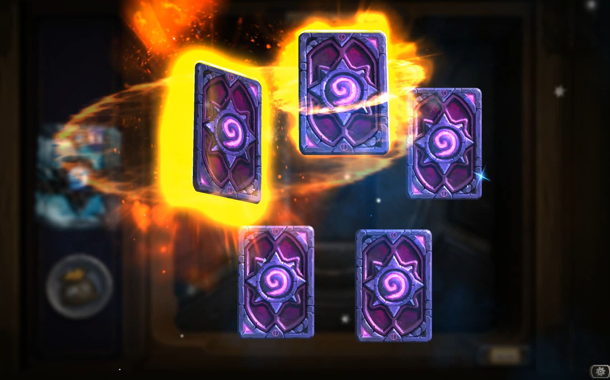
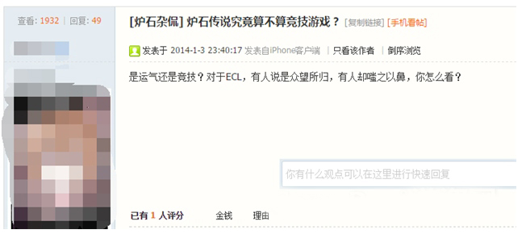
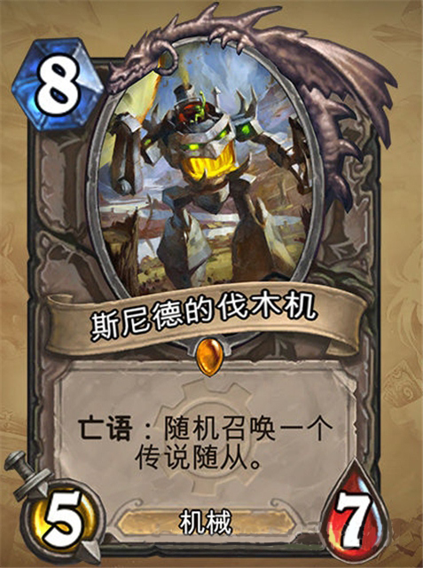
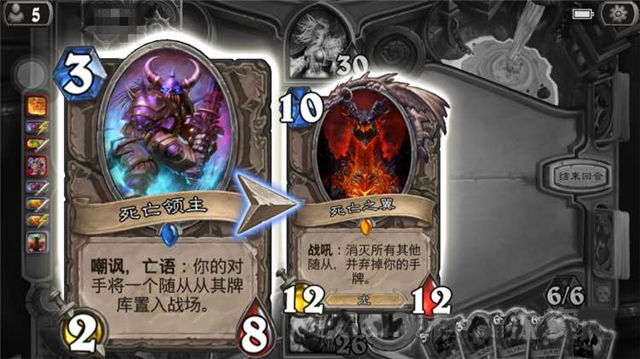
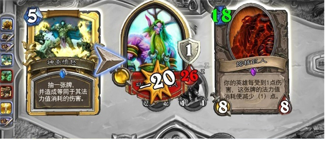
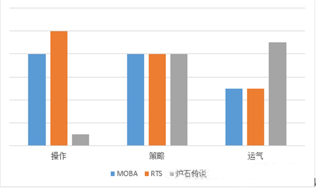

玩《炉石传说》，玩家必然逃不脱一个疑惑，那就是炉石传说中“随机”的奥秘。不论是对战，抽卡，还是卡牌的运作机制，《炉石传说》最大的魅力都在于他的随机原理。有人说，正因为有了炉石传说有着迷人的随机性，世界人民才会疯狂的迷恋上这款游戏。今天，就让我们从RNG（random number generator-随机数发生器）的角度来剖析一下这款游戏的魅力
《炉石传说》的随机性与竞技性分析
文 / sandy 来源：游资网
作为一款竞技游戏，我们首先应该清楚，它“竞”的是什么。在大多数竞技游戏中，如当下大热的MOBA游戏《DOTA》和《英雄联盟》中更多考量的是玩家操作、战术制定、团队配合；在传统老牌RTS游戏，比如《魔兽争霸3》和《星际争霸2》除了上述因素外，还融入了建筑学的元素。当然，策略更是重中之重。.那么判定为平局，但同理在回合数中，由一方血量为0，则判定为输。
那么我们不禁要问，《炉石传说》所考量的是什么？战前卡组配置、战时临场策略（如铺牌、解场、过牌、打脸等等）…然后呢？运气！没错。可能不仅仅只有小编是这样想，《炉石传说》中的运气因素有时甚至要远大于卡组与策略。《炉石传说》中随机性的体现恰恰就反应在运气这个问题上。
《炉石传说》与“RNG”（random number generator-随机数发生器）之间的故事一直是在各大论坛中被玩家们津津乐道的话题。在很多方面，RNG的能力不仅仅是体现在“从牌库中抽出了什么卡”，这也从根本上使《炉石传说》与实体卡牌游戏有所区分。举例来说，当玩家抽出一张卡，它的效果是“随机召唤任意一个2费随从到游戏中”，这时候电脑就会在所有2费的随从中随机挑选一个。这在现实世界的实体卡牌游戏中是很难做到的。 。而法术牌只能实用一次，使用后不可拿回（除去最新版本的回响效果）法术效果生效后消失；英雄牌在替换英雄后消失。
在随后而来的各种扩展包中，《炉石传说》添加了更多有随机效果的卡牌，似乎是想加强这方面的影响。在新资料片“冠军的试炼”上线后，更多新颖的卡组和战术被更多的玩家开发出来，但与此同时，很多玩家都在国外各大《炉石传说》的论坛社区中反应出一个问题：RNG貌似已经失控了。
当然，也有一些玩家对这个问题保持着完全不同的态度，他们认为《炉石传说》更多注重的是休闲和娱乐，没必要那么严谨。但是暴雪在游戏内设定的天梯排名则仿佛另有深意了。（以上翻译自Polygon资深编辑Philip Kollar）
在很多MOBA游戏内，诸如《DOTA》、《英雄联盟》中也存在暴击这种运气属性，但是明显不能左右游戏发展的局势。现在，如果我们将《炉石传说》归为一款竞技游戏，那么其RNG机制对游戏平衡的影响究竟有多大呢？
一、《炉石传说》的运气成分大致可以分为2部分
1.功能卡牌的随机性
让我们先来看一张图
相信很多玩家要是亲身经历这一幕差不多快要气得吐血了吧…没有王牌猎人之类解大哥的牌，基本上这把很难玩下去了。（毕竟崩盘领主嘛）很明显，在上面这局游戏中，整个形势就因为这张牌改变了，这是双方都没有想到的。这在《炉石传说》中仿佛已经司空见惯了。SOL君的元气骑大家都知道，我只想说小编的元气弹从来没打出来过10以上的伤害..
在《炉石传说》中的“运气”可不简单，一个“随机召唤”完全可以导致局面翻转。 毕竟现在有很多这种随机性的随从或法术牌，其效果大多数是超乎玩家可控制的范围，运气的比重明显过高；换言之策略的不确定性空间更大，策略的稳定性空间更小。
2.起手和抽卡的随机性
在之前我们已经提到过RNG的概念。举个例子来看，比如之前天梯很流行的“T7（Turn 7）猎”卡组，从策略上来说，主要是以低费随从前期铺场速攻打脸抢血的战术为核心在7费之前击败对手，游戏开始后，如果抽的牌不卡手，很容易在7费之前将对手打崩，但是如果一旦抽的牌卡手，这套卡组在后期很难有优势。看到上文鲜艳的两个“如果”…没错，在游戏中，玩家的初始手牌和每回合发的卡牌就是在游戏中利用的主要资源（当然也有伊瑟拉、精英牛头人酋长等卡牌也可以给玩家带来牌库以外的卡牌---但它们通常也是随机的），而这一点也不是由玩家能控制的，全看系统的牌给的怎么样，初始手牌可以更换一次，但有的时候运气要是差了，依然会很卡手。 对面的人品若要好一点，完全会被压着打；或者---遇到“天胡”的情况开场直接爆炸，这时候就会有玩家叹息“我的卡组很好啊，但就是抽不到!”。
二、比较《炉石传说》和以往的竞技游戏

从操作来看，RTS的多线操作所要求极高的APM才能在游戏中有出彩的表现；MOBA在这方面也不呈多让，单个英雄的走位、技能释放等都要求细腻的操作；而炉石的话，仿佛除了点来点去就没有什么操作了（当然，场景上的很多小部件可以供玩家闲时解闷）。
从策略上来看，三种游戏可以说是不相上下，各有千秋。
RTS的操作要求玩家像战场指挥官一般，从宏观的角度进行发展，通过对游戏的资源、地形与气候、补给、单位进行合理的操控来获取胜利；MOBA类游戏的策略在赛前的BAN/PICK就已经开始，针对对方选取阵容，进入游戏后的团战、对线、支援等等都是依靠一定的策略进行下去；在炉石中，首先玩家的牌库卡组的构造就需要玩家花费大量的时间、精力去研究及改进，在进入游戏后，面对对手进行合理的铺牌、过牌、清场、打脸来赢取胜利。
从运气这一点来看，在游戏外，仿佛RTS和MOBA更多要体现在抽签这方面，比如抽个外卡队可能会比较轻松（比如今年《英雄联盟》S5的Bangkok Titans），但也不排除在比赛中外卡队摇身一变成黑马……在游戏中，运气可能就体现在对手的失误上，本来身处优势被对手抓住失误一波翻盘也早已屡见不鲜；而在炉石中，运气是完全可以左右结局的。所有人都希望，在合适的时间抽到合适的卡，这是所有炉石玩家都期望的，只可惜…..
现在回到我们文章一开始的观点，《炉石传说》要想作为一个严格意义上的竞技游戏，“运气”对游戏的影响是否有点过高了？是否有点影响平衡？
从玩家方面 考虑来说，随机性卡牌大大增强了游戏的乐趣，游戏的不确定性让玩家们觉得很开心。但要是对电竞选手来说，绞尽脑汁筹谋的卡组、精心算计的临场策略就因为游戏过强的随机性而输了，明显会很不甘心；他们会觉得他们并没有输给对手，只是输给了RNG而已。在《英雄联盟》的比赛中，系统不会突然把玩家恶心一把，但《炉石传说》会。
有没有什么办法呢？
有玩家曾给我说过，过牌性越强，随机性带来的影响越弱。这的确是个好方法，到手的卡牌越多，牌库的不确定性就相对越少。很多职业和随从都有过牌的方法，比如术士本身的生命分流，战士偏爱的痛苦侍僧，牧师的北郡Bi（哔）tch等等….但是过牌本身也有局限性，过牌对局面要有一定的控制，当我们需要随从缓解场上压力时，过牌并不能帮助我们；而且并不是任何职业都要求过牌的。
炉石设计师Ben Brode曾在The Angry Chicken中提到过，他认为随机性也能提高游戏技巧，这句话的确没有错，但是也是同样没有逃脱“运气”的范畴。
三、结论
首先，小编是很喜欢RNG的机制的，它的确很有意思，为我们的游戏创造了更多的乐趣，就像我们的人生一样，我们不知道明天会发生什么。但是作为竞技总得体现出“对抗”，每套卡组及相应的策略都汇集了玩家们大量的心思，如果我们单纯的仅仅只是拼“运气”，那似乎与赌博无异了。
小编认为从游戏本身机制去解决这个问题是很有难度的，毕竟电竞选手对于大众玩家来说尚属少数，而且这个机制对于游戏来说并没有什么问题，只是在作为一款严格意义上的竞技游戏来说会影响平衡而已。也没有必要为了迎合竞技性来削减游戏乐趣。
大家都知道足球赛有联赛制也有赛会制。联赛制就是多循环看积分，赛会制比如世界杯在小组赛为3循环，决出16强，之后为单循环的方式进行比赛，由于单循环的出现就导致了这种杯赛很容易出现黑马。/PICK就已经开始，针对对方选取阵容，进入游戏后的团战、对线、支援等等都是依靠一定的策略进行下去；在炉石中，首先玩家的牌库卡组的构造就需要玩家花费大量的时间、精力去研究及改进，在进入游戏后，面对对手进行合理的铺牌、过牌、清场、打脸来赢取胜利。
《炉石传说》世界锦标赛所有的赛事都采用五局三胜的车轮战模式，每一局玩家使用三个不同职业参赛。在“车轮战”模式中，如果你输掉一局比赛，你就必须换下当前使用的套牌。每个玩家将准备三副套牌进行比赛，赢得三局的选手将获得胜利。 Titans），但也不排除在比赛中外卡队摇身一变成黑马……在游戏中，运气可能就体现在对手的失误上，本来身处优势被对手抓住失误一波翻盘也早已屡见不鲜；而在炉石中，运气是完全可以左右结局的。所有人都希望，在合适的时间抽到合适的卡，这是所有炉石玩家都期望的，只可惜…..
但小编依然认为对《炉石传说》这种对局时间较短、运气因素影响过多的游戏来说仍然不够全面，但同时我们也不可能要求选手们“决战到天亮”…那么具体怎么做能让炉石的竞技性体现的更强、更严谨，让观众和选手对我们的竞技更信服，依然需玩家们和暴雪继续探索。